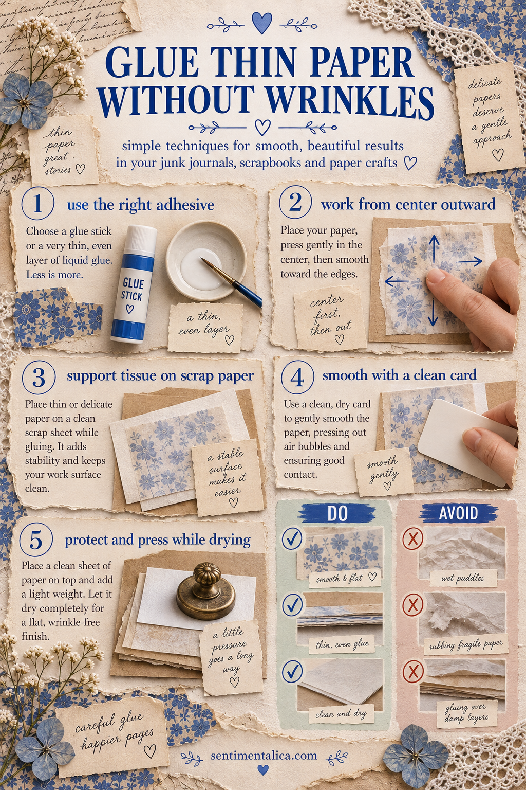
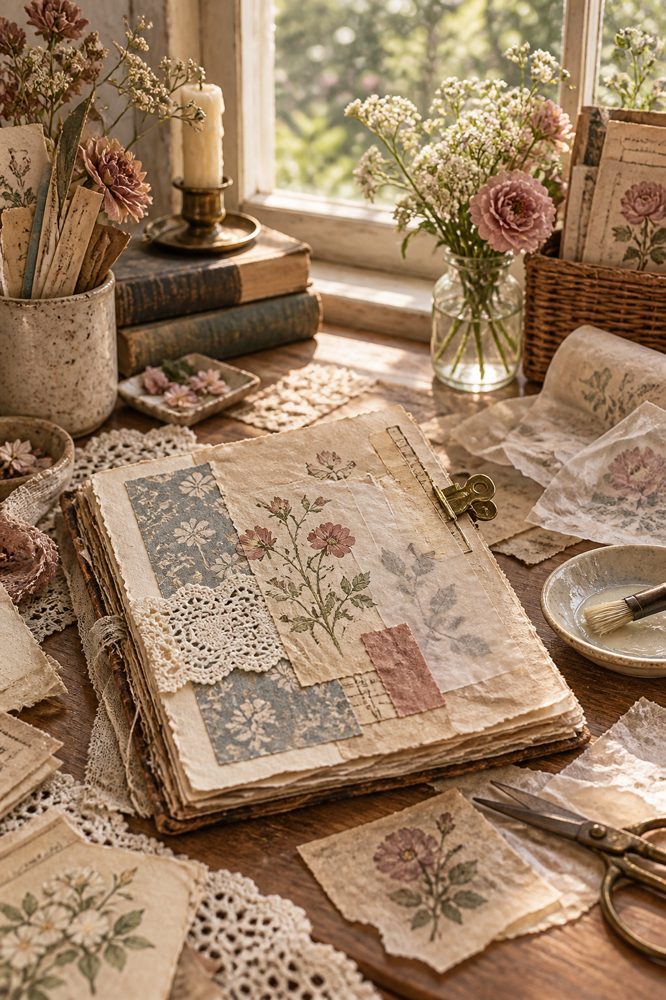

Thin paper can make a journal page feel wonderfully layered. It can also wrinkle the moment it meets wet glue. The problem is rarely your paper. Usually, it is a mismatch between the amount of moisture, the kind of adhesive and the way the piece is handled.
The safest rule is simple: the thinner the paper, the less moisture and pressure it needs. Before working on a favorite scrap, test your adhesive on an offcut from the same sheet.
Choose the method by paper type
1. Glue stick for everyday book paper
A soft, good-quality glue stick is the easiest choice for dictionary pages, old book paper and lightweight printed sheets. Place the paper face down on scrap paper. Apply a thin, even coat from the center toward every edge. Lift it with dry fingertips, place one edge first, then lower the rest.
Cover the piece with clean copy paper and smooth it gently with your palm. Change the protective sheet if any glue transfers to it.
2. Dry adhesive for very delicate pieces
For tissue-thin paper, vellum or a fragile scrap, double-sided adhesive sheets and narrow tape add no moisture. Put the adhesive on the receiving page rather than rubbing the delicate piece. A few well-placed strips are enough unless every edge must be sealed.
This method also works when the journal page beneath is watercolored and you do not want to reactivate it.
3. A barely loaded brush for matte medium
Matte medium is useful when you want a translucent scrap to melt visually into the background. Brush a whisper-thin layer onto the journal page—not onto the tissue. Lay the paper down once and avoid lifting it again.
Place a piece of wax paper over it and press outward with a soft cloth. Do not keep brushing over the top. Repeated wet strokes stretch the fibers and create ridges.
4. Adhesive only at the edges
Old ledger paper, tea-dyed sheets and handmade paper often look better when they are not pasted flat. Run a very narrow line of glue just inside two or three edges. Leave one corner loose, or turn the piece into a tuck spot.
This reduces buckling and preserves the natural movement of the paper.
5. Stitch instead of gluing
When a piece is especially precious or unstable, attach it with two small hand stitches, a line of machine stitching or a tiny staple hidden beneath an accent. Sewing adds texture without moisture and makes removal possible later.
The placement trick that prevents bubbles
Do not drop a glued piece flat onto the page. Hold it in a shallow curve, anchor one short edge, and slowly lower the rest while smoothing in the same direction. This gives trapped air somewhere to escape.
If a bubble appears, resist peeling everything up. Prick the bubble with a fine needle, press the air toward the hole, cover with wax paper and weight the page beneath a book once the adhesive is almost dry.

What to avoid
Avoid thick puddles of white glue, soaking the back of tissue, dragging a bone folder directly across damp paper, and closing the journal before the page dries. Water-based glue shrinks as it cures; too much of it pulls thin fibers into waves.
For a flatter finish, leave the journal open for ten minutes. Then sandwich the page between clean wax paper and place it under a light stack of books overnight.

The goal is not to make every piece perfectly flat. A little lift at a torn edge can be beautiful. Control the moisture, touch the paper as little as possible, and let its natural texture remain part of the page.